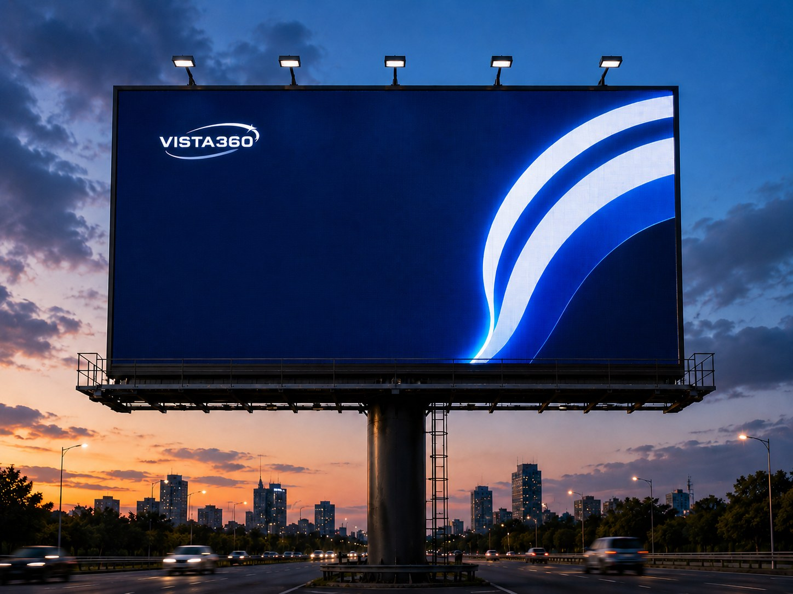
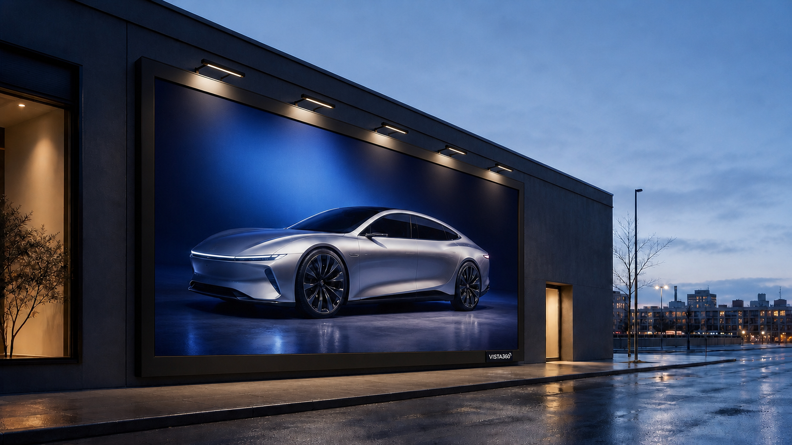
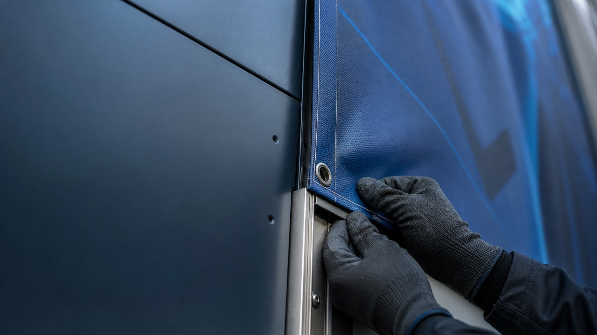
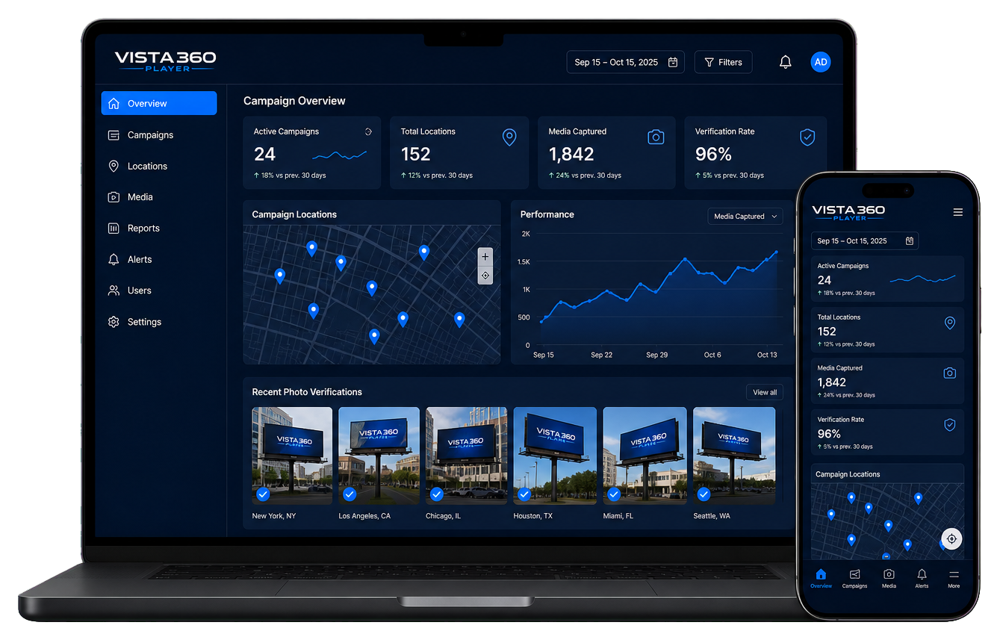
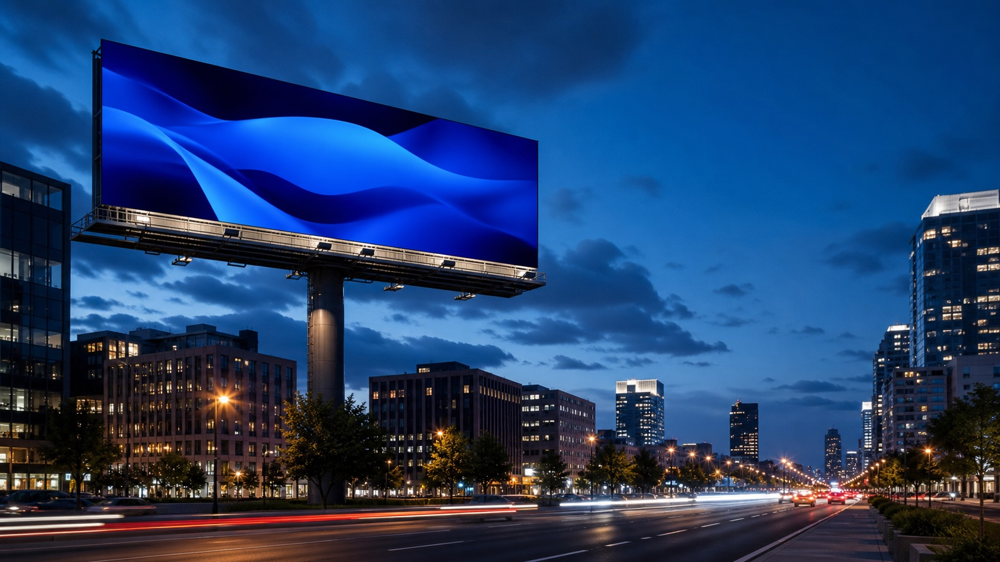

Entendemos el objetivo.
Partimos de lo que la marca necesita conseguir.

Empezamos con una idea sencilla: la publicidad exterior puede sentirse más estratégica, cuidada y cercana.
No buscamos llenar la ciudad de soportes. Queremos identificar lugares donde una marca pueda aparecer con propósito, integrarse al recorrido cotidiano y permanecer en la memoria.

Observamos fachadas, avenidas y puntos de encuentro para encontrar el lugar donde cada mensaje puede adquirir escala sin perder claridad.
Cada campaña se construye como una secuencia. Escuchamos, elegimos, producimos y acompañamos para que la idea conserve su fuerza hasta el momento de ser vista.

Partimos de lo que la marca necesita conseguir.
Relacionamos público, zona, visibilidad y formato.
Preparamos cada pieza para que comunique con claridad.
Mantenemos una comunicación cercana durante el proceso.
VISTA360 Player reúne campañas, pantallas, evidencias y reportes para ofrecer una experiencia más clara y ordenada desde cualquier dispositivo.

Seleccionar mejor vale más que ocupar por ocupar.
Explicamos posibilidades, tiempos y siguientes pasos sin complicarlos.
La calidad se reconoce en cómo se integra, se instala y se presenta una campaña.
Nacemos en Huánuco y construimos desde el conocimiento cercano de su ciudad.
